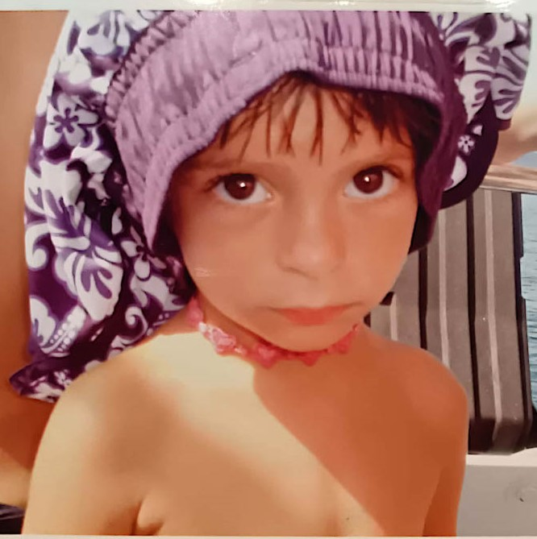

Mi chiamo Martina Gallo e ritengo di essere una persona affidabile, responsabile e predisposta al lavoro di gruppo. Sono aperta alla comunicazione e all'organizzazione e mi impegno a riconoscere le diverse situazioni, adattando di conseguenza il mio comportamento e il mio lessico, per collaborare efficacemente e creare un ambiente armonioso e produttivo. Nonostante la mia giovane età, sono animata da una forte voglia di fare, apprendere, crescere e migliorarmi costantemente. Ho maturato esperienze lavorative, come la raccolta della frutta, che mi hanno insegnato il valore della disciplina, della costanza e del denaro, rafforzando in me il senso di responsabilità e di impegno.
Nel tempo libero coltivo la passione per gli anime, tra i miei titoli preferiti ci sono Attack on Titan, Violet Evergarden e Hunter x Hunter. Negli ultimi tempi ho riscoperto il piacere della lettura, in particolare di testi di psicologia e filosofia, che mi permettono di esplorare la mente, suscitando emozioni profonde e stimolando riflessioni complesse, contribuendo alla mia crescita personale e alla mia visione del mondo.
Frequento il terzo anno dell' Istituto di Istruzione Superiore Giancarlo Vallauri, settore Informatica e Telecomunicazioni, acquisendo competenze tecniche e metodologiche fondamentali. Tra le mie passioni rientra l'informatica, ambito nel quale amo comprendere e sperimentare, poiché mi permette di approfondire le mie conoscenze, scoprire nuove possibilità e, in qualche modo, conoscere meglio me stessa. È un'attività che mi coinvolge profondamente, richiede concentrazione e precisione e mi consente di distogliere la mente dalle distrazioni del mondo esterno.
Guardo al futuro con determinazione e curiosità. Il mio obiettivo è continuare a formarmi, ampliare i miei orizzonti e trasformare la passione per l'informatica in una professione concreta e appagante. Desidero mettermi alla prova, affrontare nuove sfide e contribuire a progetti innovativi, migliorando costantemente le mie competenze tecniche e personali. Credo che l'impegno, la volontà di apprendere e la capacità di adattarsi siano elementi fondamentali per costruire il mio percorso professionale e raggiungere il lavoro dei miei sogni.